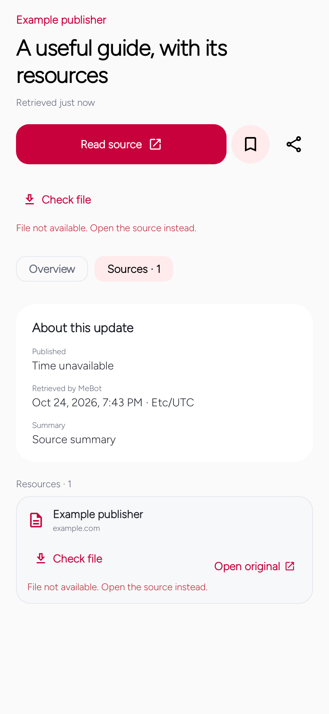
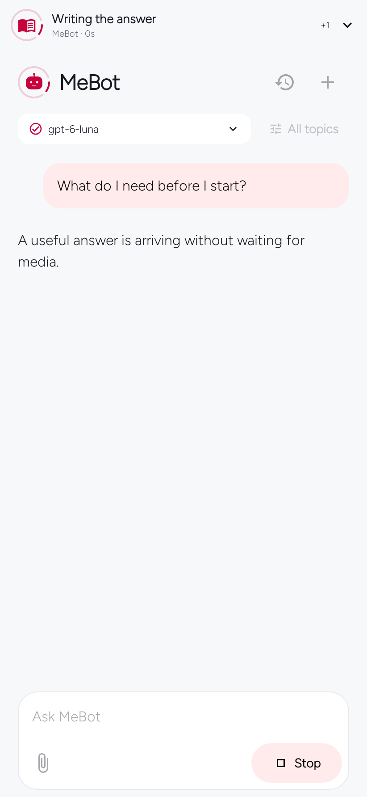
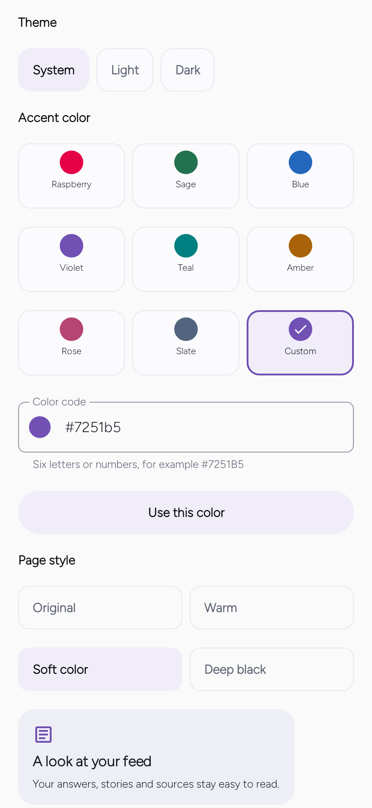

Start here
A short walk through MeBot
See the main actions with real app screens. Move at your own pace.
On first launch
Choose your interests
Pick the topics you actually want to follow.
Tap topics such as News, Music, Learning or Weather. Add a city only when local information matters to you. You can change these choices later in Modules.
Explore modules →
Feed → open a story
Read, then ask
Open a story and keep its useful details together.
The explanation appears with the story. Original notes and next steps stay available in the notes section. Ask a follow-up without losing the original source.
Read the feed guide →

MeBot → send a question
See what is happening
Follow AI activity in one place at the top.
The top panel reports actual request activity. Expand it for brief updates. Your answer arrives below; media and file previews do not replace it. No invented countdown is shown.
Connection help →

Answer → Files → Save file
Save a useful file
Use Files to keep a document on your phone.
Choose a supported public file, tap Save file, then pick a folder in Android’s save screen. Files are checked and limited to 20 MiB. A protected page or missing file keeps Open original instead.
Files and media guide →
You → Preferences → Appearance
Choose your look
Change the accent and page style without losing your data.
Pick one of eight accents or enter a six-digit colour. Choose Original, Warm, Soft colour or Deep black. Light, dark and device settings remain available.
Appearance guide →

You → background settings
Set your pace
Choose how much MeBot prepares for your next visit.
Set refresh intervals, preparation and daily request limits. Unlimited removes MeBot’s local cap, not your provider’s limits. Keep useful content cached while new information is prepared.
Background and data guide →